Grade 10 ICT · Room IG04
// line up A to Z by first name
Google Classroom code: yvyk3hu2
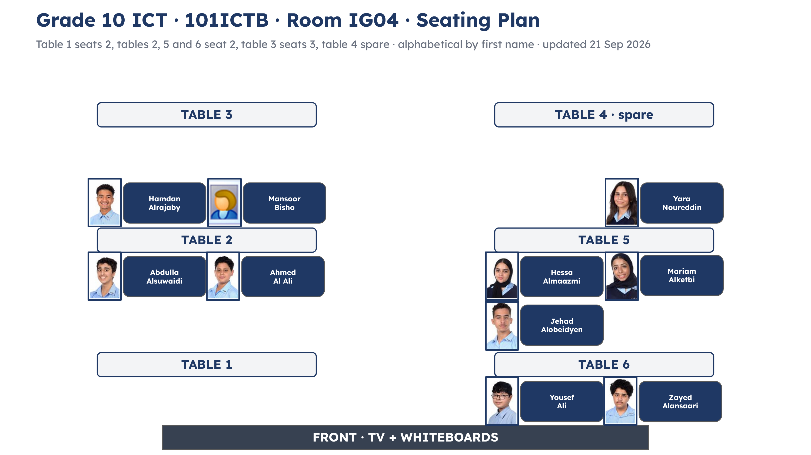
find your table as you walk in
// today
Lesson 1
Finish your race course design: side view and top view.
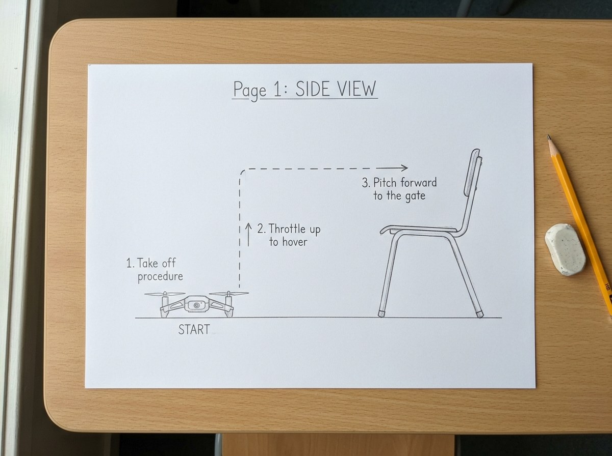
Lesson 2
Grand Final: two designs, two time trials, two champions.
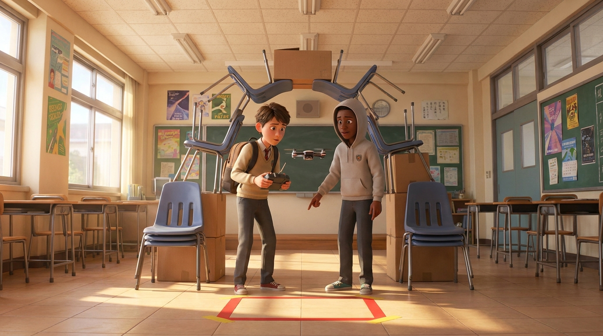
Press the Overview button at the bottom left at any time to see this plan again.
// do_now · on your printed sheet
5 minutes Your flying partner: Mr Igor pairs you. Drone stays off, on the desk, until Mr Igor says go.
// check · do_now
Roll or yaw?
Yaw spins the drone on the spot. Roll slides it sideways.
Drifting while it hovers?
Land, then calibrate on a flat surface. Calibrating tells the drone which way is level.
// what_we_are_learning
// do_now · rate_yourself_before
Score every row 1 to 5 in the Before Flying column: how confident you feel right now. Use the barometer.
Open self-assessment ↗ 3 minutes
// lesson_1 · rally_co_drivers
Listen for
What are pace notes for, and what happens when they go wrong?
8 minutes Open the video ↗
// turn_and_talk
Why does a fast driver need a co-driver? So what is our Navigator's job?
Start with: "The Navigator's job is..."
3 minutes
// lesson_1 · navigation_notes
Side view: top half of your A4. Up, down and forward.
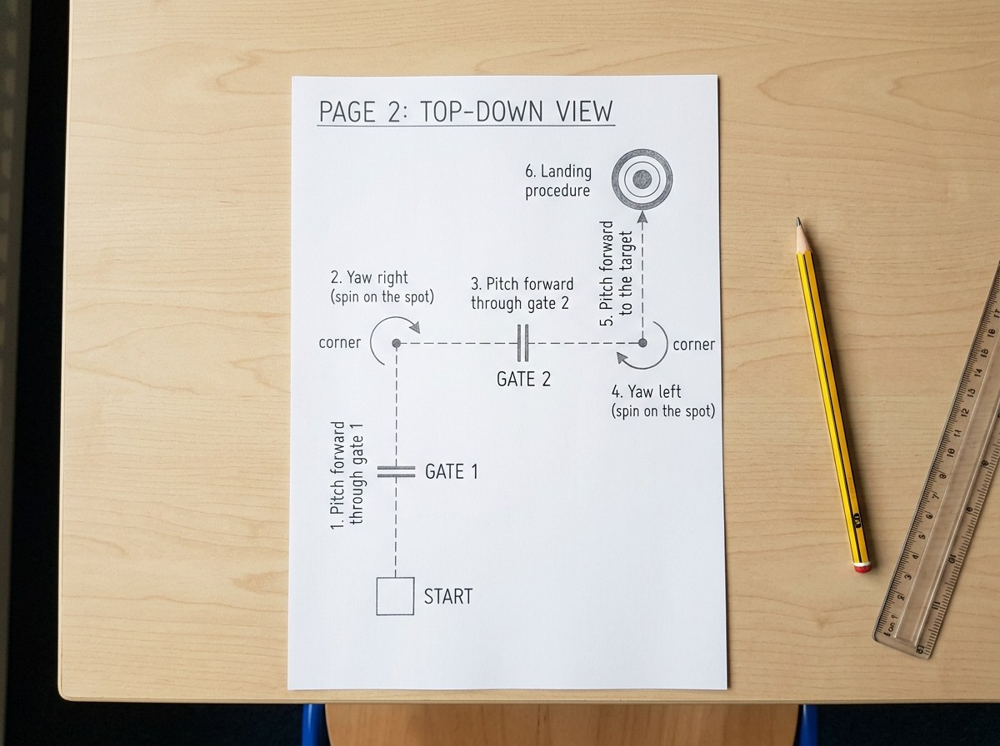
Top view: bottom half of your A4. The turns.
Navigation notes are our pace notes: they tell the Pilot what comes next. Number every move. Draw an arrow. Label it in drone words. These are examples, not your course. 2 minutes
// lesson_1 · design_your_race_course
7 minutes Drone words: take off procedure, throttle, hover, pitch, roll, yaw, landing procedure
examples only: the side view goes on the top half, the top view on the bottom half
// lesson_1 · read_it_back
4 minutes
// brain_break · end_of_lesson_2
// this lesson's pairs
3 minutes
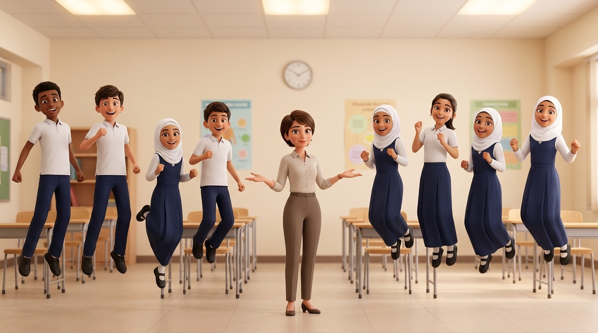
// brain_break · end_of_lesson_1
3 minutes
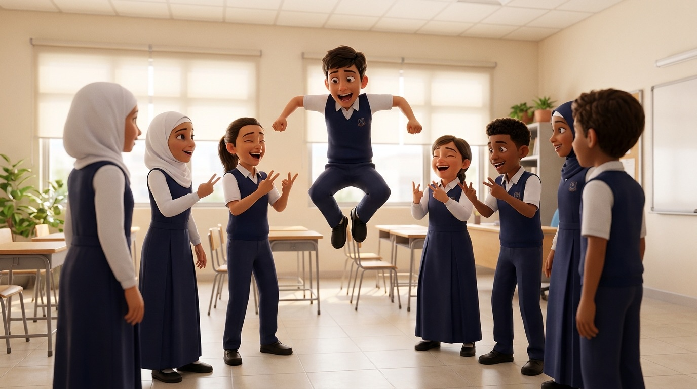
// lesson_2 · calibrate
4 minutes Motors stay off Pilot calibrates, Navigator reads Open calibration guide ↗
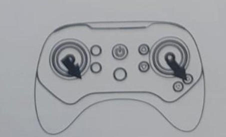
Step 5: both joysticks, bottom right corner, at the same time.
// flying_rules · before any take off
Your class wrote these rules.
// lesson_2 · skills_and_roles
PILOT
You are in charge of the drone
Say it:
Swap roles after every task.
Stems from the Engineering Discussion Toolkit.
NAVIGATOR
You are in charge of the words
Say it:
Swap roles after every task.
Stems from the Engineering Discussion Toolkit.
Print the role cards ↗ Tap a card to see it big
// lesson_2 · roll_vs_yaw
Roll
Right stick, left or right. The drone slides sideways. Its nose still points the same way.
Yaw
Left stick, left or right. The drone spins on the spot. Its nose turns.
Navigator calls, Pilot flies. Then swap and fly it again.
Take off procedure. Roll left. Hover. Roll right. Hover. Yaw left. Pitch forward. Hover. Landing procedure.
4 minutes Wait for Mr Igor's go Slow is smooth, smooth is fast
// lesson_2 · warm_up_round
Drill 1: Turn and go
Yaw until the nose points at one gate, then pitch forward through it. Once each.
Drill 2: Your hardest drill
The drill you found hardest last lesson. Fly it once each, slowly, one move at a time.
Navigator calls. Pilot flies. Swap after every drill.
Slow is smooth, smooth is fast.
6 minutes Swap roles after every drill Wait for Mr Igor's go
// turn_and_talk
What will make your race run clean, not just fast?
After the swap, start with: "I agree because..." or "I'd add...".
2 minutes
// lesson_2 · set_up_the_time_trial
Build the course in the picture, together.
4 minutes Open calibration guide ↗
// lesson_2 · race_rules
// lesson_2 · time_trial
12 minutes One clean run per pair You time the first pair, then the pair that just flew times the next. START at take off, LOG on landing. The pair up next calibrates now. Open calibration guide ↗
// lesson_2 · check_in
3 minutes
// lesson_2 · check_in · rate_yourself
Score only Success Criterion 1 and the warm-up round. Score yourself first, then your Navigator scores you. Leave the other rows for after the race.
Open self-assessment ↗ 3 minutes
// lesson_2 · pick_and_build_course_a
4 minutes Open calibration guide ↗
// lesson_2 · race_course_a
10 minutes Navigators call from the plan on the chair You time the first pair, then the pair that just flew times the next. START at take off, LOG on landing. Designers fly last. The pair up next checks their drone: switched off? Calibrate again. Open calibration guide ↗
// lesson_2 · pick_and_build_course_b
4 minutes Open calibration guide ↗
// lesson_2 · race_course_b
10 minutes Navigators call from the plan on the chair You time the first pair, then the pair that just flew times the next. START at take off, LOG on landing. Designers fly last. The pair up next checks their drone: switched off? Calibrate again. Open calibration guide ↗
// secret_challenge
// lesson_2 · champions
Course A champion
The fastest clean run on Course A.
Course B champion
The fastest clean run on Course B.
Best course design
One vote each, hands up. Not your own plan. Which plan could a Navigator call cleanly from the notes alone?
3 minutes
// lesson_2 · heat_board
20 minutes Two pairs fly one after the other. The faster clean time goes through. Type the pair names in Round 1. Tap a box (or WIN) to send that pair through.
// lesson_2 · rate_yourself_after_the_race
Score the rows you did today; leave blank any row you did not do. Score yourself first, then your Navigator scores you. Then write 1 or 2 sentences about what you can improve.
Open self-assessment ↗ 3 minutes
// pack_up
3 minutes
// exit_ticket
Open self-assessment ↗ Hand your sheet and your self-assessment to Mr Igor.
// notes_for_next_lesson
Saves as you type on this machine. ⌘S saves a copy of the deck with these notes in it.
// brain_break_bank · this_or_that
// this lesson's pairs
3 minutes
// brain_break_bank · four_corners
3 minutes tap the card, no pack and no phone needed
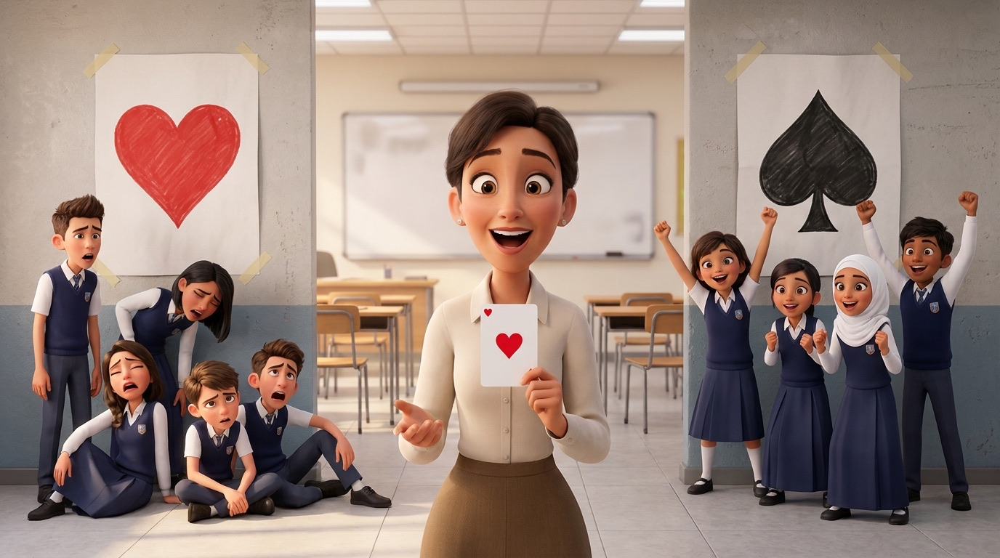
// brain_break_bank · boi_ing_7
3 minutes
// brain_break_bank · look_down_look_up
3 minutes
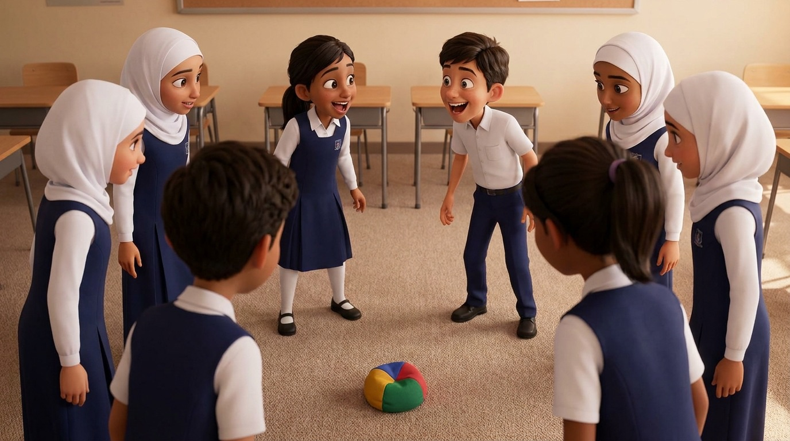
// brain_break_bank · bang_circle
3 minutes
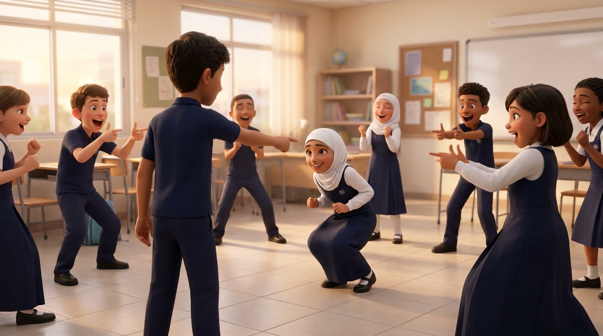
// brain_break_bank · heads_or_tails
3 minutes tap the coin, no real coin or phone needed
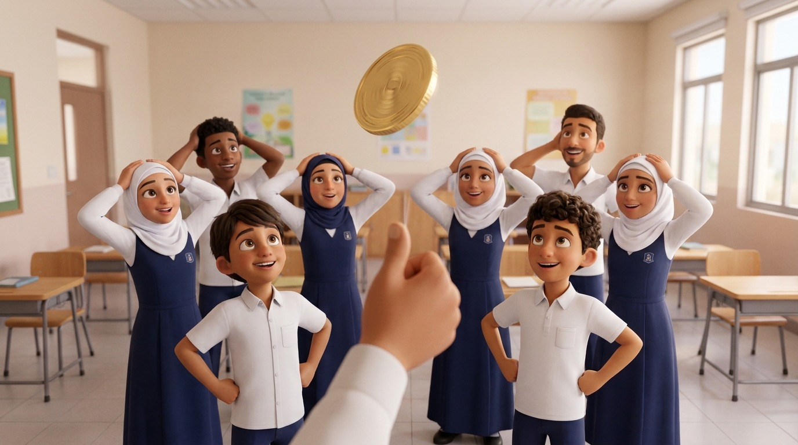
// brain_break_bank · silent_ball
3 minutes
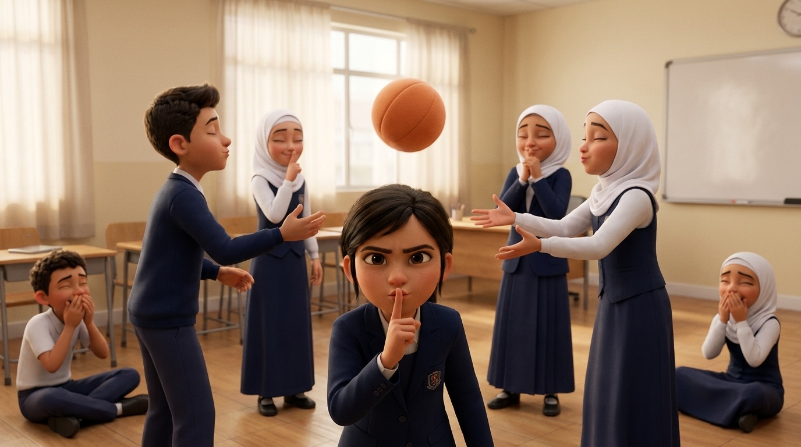
// brain_break_bank · heads_down_thumbs_up
10 minutes
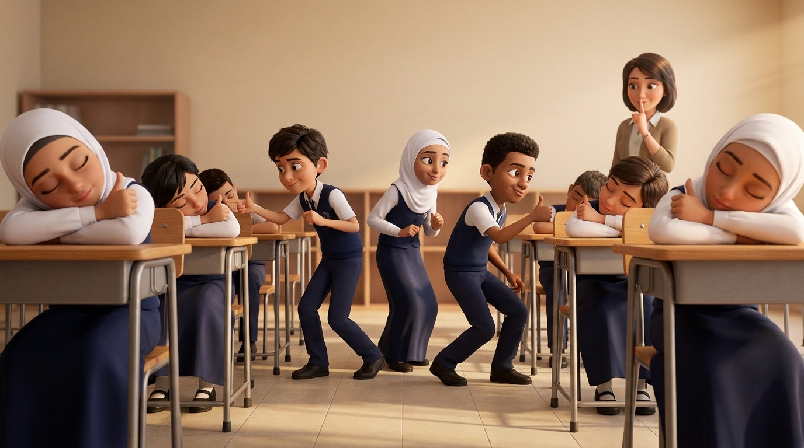
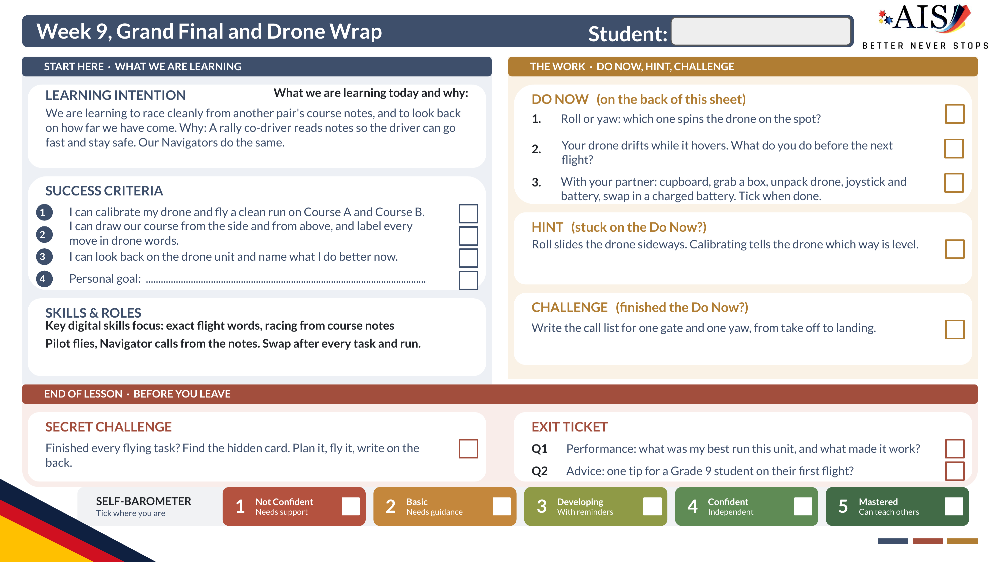
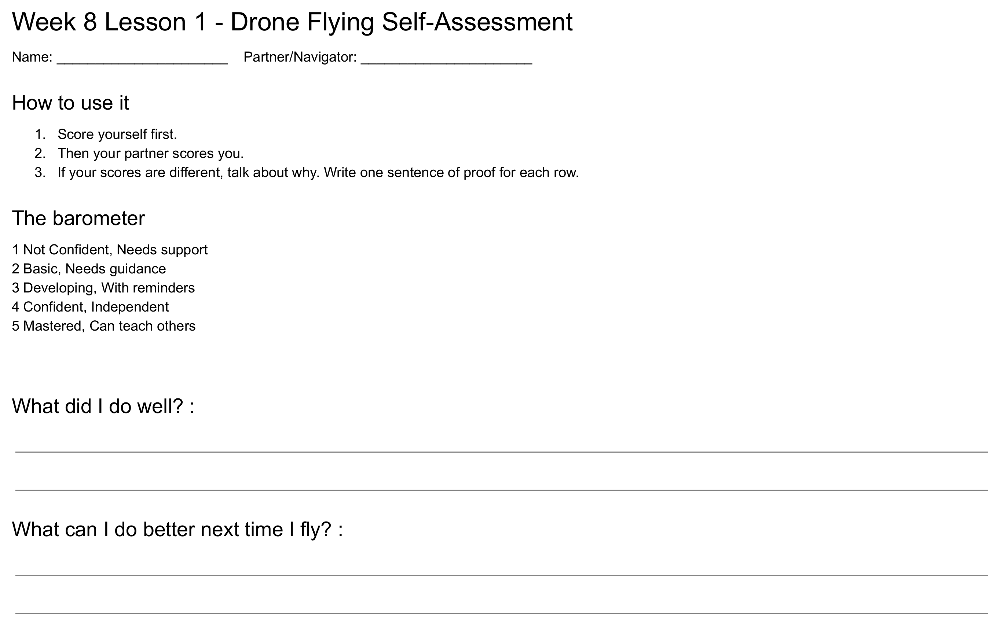
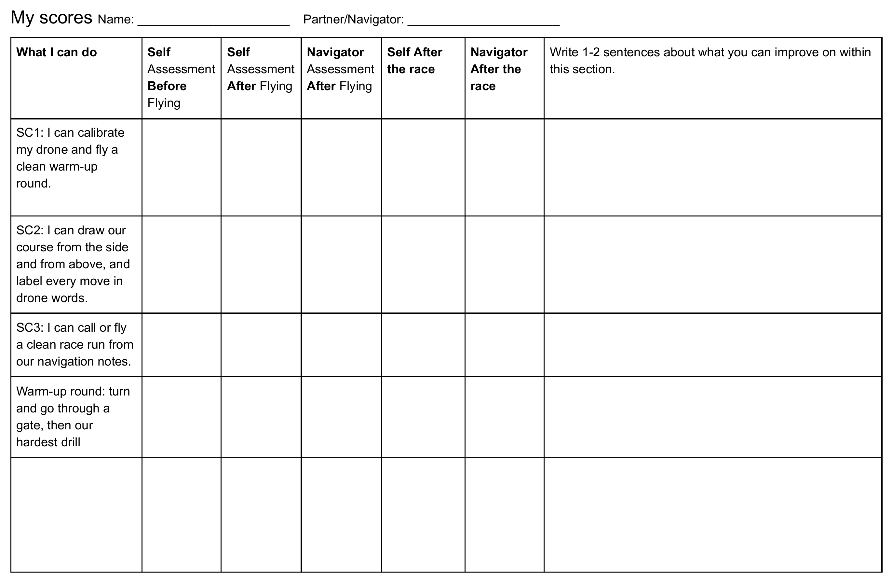
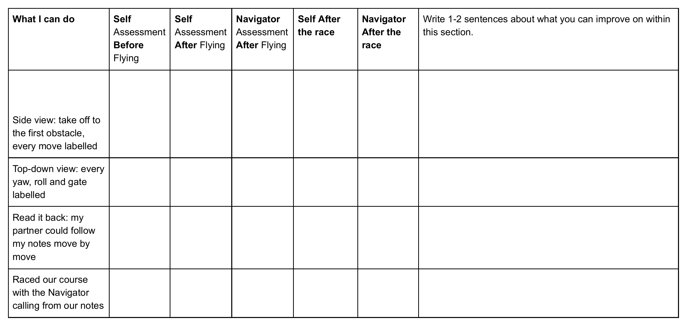
Esc, click anywhere, or press S to close
// overview
Tap a card to see its slides. Tap a slide to open it, then NEXT carries on.
18 of 18 still to be picked
18 here today · nobody picked yet
// the cold call kit
// still owes you an answer
// here today · tap a name to mark it away